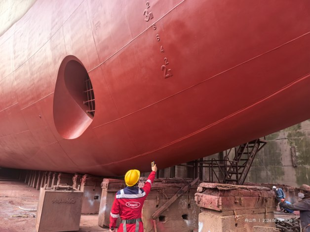

DW ULV G50
Solvent-free marine coating
High-solids corrosion protection for vessel structures, tanks and hull applications.
A solvent-free modified resin coating designed for high-build application. Suitable for ballast tanks, cargo holds, fuel oil tanks, fresh water tanks, engine rooms, crew areas and external hull structures, subject to the project coating specification.
- High solids
- High-build application
- Conventional spray equipment
- Ambient curing
Engineered for the way you work.
Long dry-docking time
Fewer coats help shorten coating work and support a faster return to service.
Coating material costs
No additional thinner is required, reducing associated purchasing and handling.
Onboard work during maintenance
Low VOC and low odor help reduce emissions and disruption during coating work.
Tight docking schedules
High-build application with standard equipment helps reduce the number of coats.
Complex on-site mixing
No extra thinning helps simplify preparation and application.
VOC emissions and solvent odor
Low-volatility formulation helps improve the working environment.
Large coating volumes
Fewer coats and conventional equipment support coating progress.
Complex material management
Less thinner use simplifies material handling and application.
Large-scale VOC control
Lower solvent emissions help reduce environmental treatment demand.
Application data
Reference application values from the supplied marine coatings brochure. Confirm temperature, substrate, coating system and the current technical data sheet with our team before specification.
| Pot life | 2 h |
|---|---|
| Gel time | 4 h |
| Application pressure | 18–25 MPa |
| Nozzle tip | 0.017–0.025 in |
| Dry film thickness | 200–300 μm |
| Surface dry | 4 h |
| Semi-hard dry | 12 h |

Yupeng. A new chapter in hull protection.
See how DW G50 was applied to the outer hull, waterline and cargo holds of Dalian Maritime University’s ocean-going training vessel.
View case studyFind the right coating solution.
Talk to our team about your vessel, operating conditions and next project.